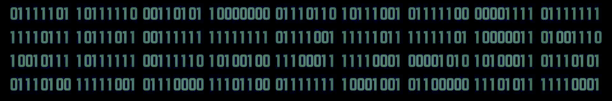
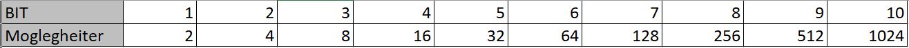
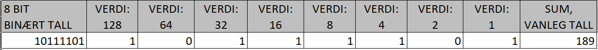
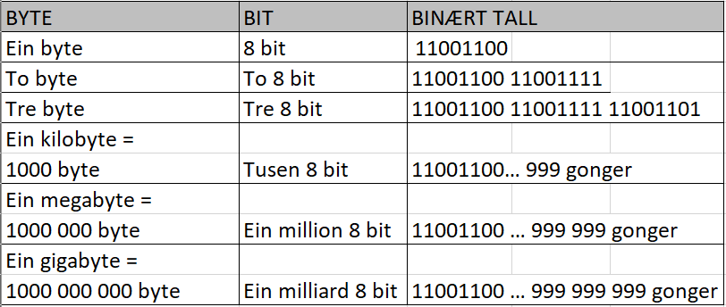

Bit
Ein brukar bit til å lagre informasjon i ein datamaskin.
1 = på, 0 = av
Antall moglegheiter
8 bit er ein byte
1 byte er den minste plassen ein kan setttje av til bruk i minnet.
Det er stor nok plass til å beskrive ein farge eller eit lydnivå, eller til å angi eit tegn i eit tegnsett.
Lagringsplass
Lagringsplass oppgis i byte.